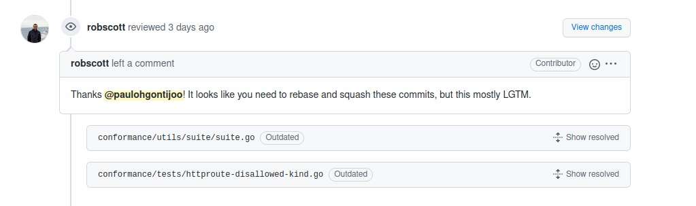
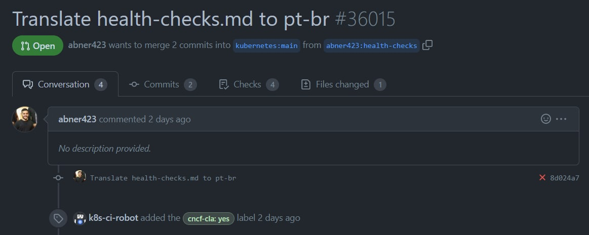
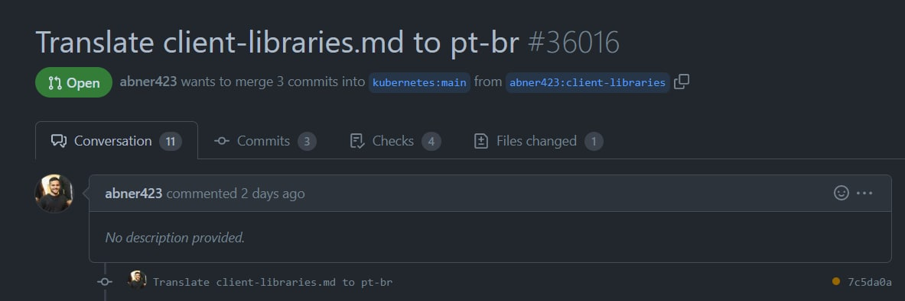
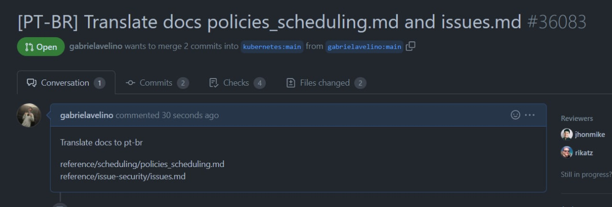
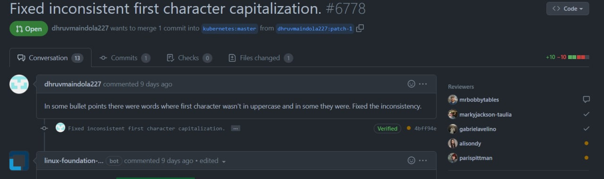

SPRINT 4 - Kubernetes
Planejamento
Para a Sprint 4, o nosso grupo continuo com o pareamento, em busca de finalizar as issues realizadas nas sprints passadas e conseguirem ter os seus PRs aprovados.
| Duplas |
|---|
| Geraldo Victor e Paulo Gontijo |
| Abner Filipe e Gabriel Avelino |
| Natanael Filho e Lorrany Oliveira |
| Daniel Alves e Gustave Persijin |
Tabela 1: Duplas
Objetivos
O grupo decidiu ir atrás de realizar cada tipo de atividade e contribuição dentro da comunidade do Kubernetes, completando as atividades da Sprint 3. Algumas das atividades foram: - Revisar e finalizar traduções. - Revisão de PRs. - Finalizar Issues em aberto.
Trabalhos realizados
Issue #1273
A issue da sprint passada #1273 da organização principal do Kubernetes. Link da issue: https://github.com/kubernetes-sigs/gateway-api/issues/1273 A issue foi finalizada e recebeu a tag LGTM (Looks good to me) do mantenedor, tal tag é pré-requisito para que o PR seja merjado.

Imagem 1 - Issue escolhida pelo grupo
Tradução de documento
Além da issue acima foi realizado uma tradução de documentação para PT-BR, seguindo as regras de contribuição, onde tem que dar o assign no excell, escolhendo a documentação desejada para tradução.

Imagem 2 - PR da documentação
Documento que traduz os health-checks do inglês para o pt-br.

Imagem 3 - PR da documentação
Documento que traduz o client-libraries do inglês para o pt-br.

Imagem 4 - PR da documentação
Documento que traduz as políticas do escalonador e como abrir issues para o kubernetes.
Revisão de PR
Outra abordagem tomada pelo grupo, foi a de revisar pull-request para o maior entendimento da linguagem GO, comentando nos PRs para ter uma interação maior com a comunidade e tirar dúvidas sobre o código.
O primeiro PR revisado foi de uma tradução de documentação, onde o contribuidor queria uma revisão mais urgente da documentação e era um novato na comunidade. Link do PR: https://github.com/kubernetes/community/pull/6778

Imagem 5 - PR revisado pela dupla
Versionamento
| Data | Versão | Descrição | Autor |
|---|---|---|---|
| 17/08/22 | 1.0 | Criaçao do documento | Gabriel Avelino |
| 18/08/22 | 1.1 | Ajustes de formatação e criação de legendas para as imagens | Gabriel Avelino |
| 18/08/22 | 1.2 | Ajustes de formatação e criação de legendas para as imagens | Gabriel Avelino, Geraldo Victor, Paulo Gontijo, Lorrany Oliveira, Natanael Filho |